Create with learned templates, upscale any prompt, keep the good ones.
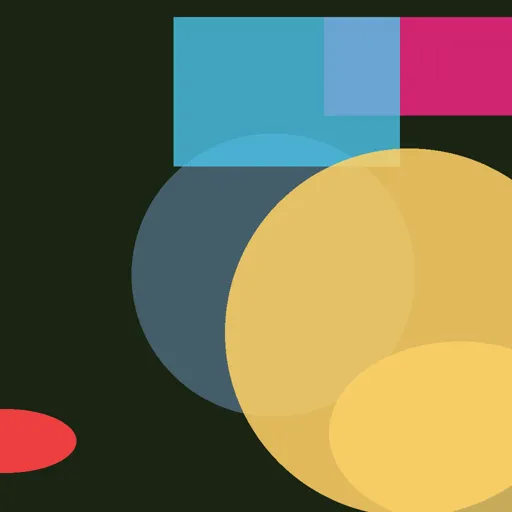
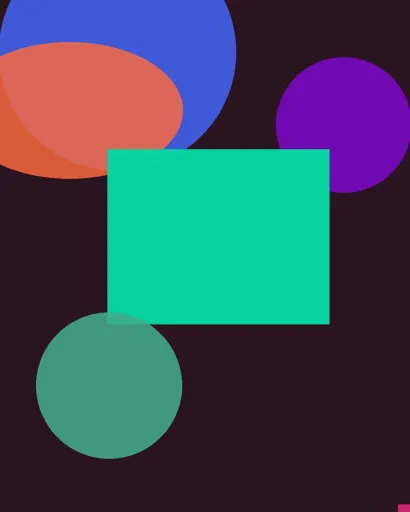
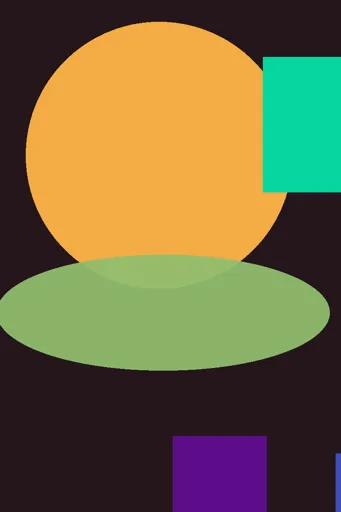
Illustrious · v1 · updated just now
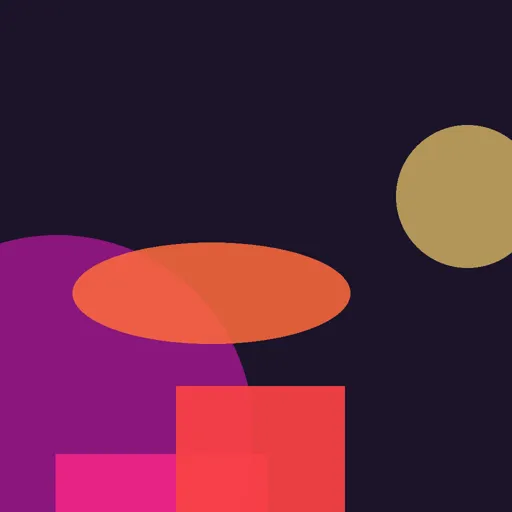
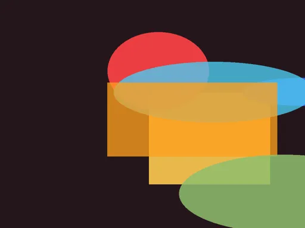
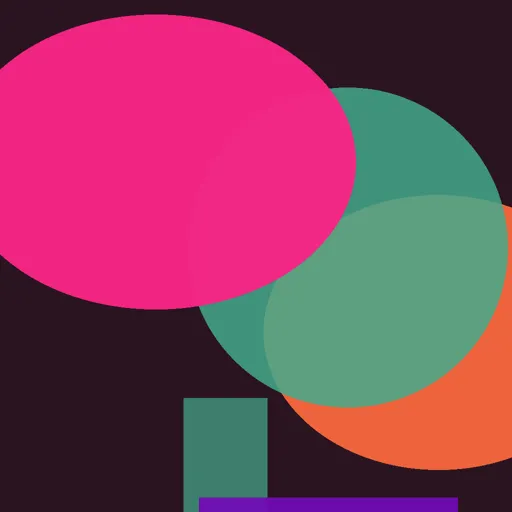
SDXL · v1 · updated just now
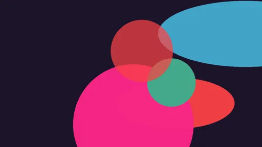
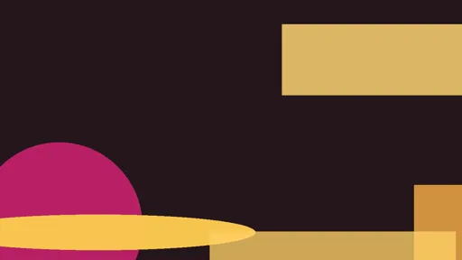
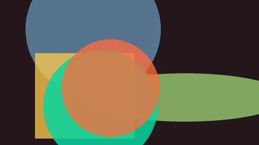
Wan · v1 · updated just now
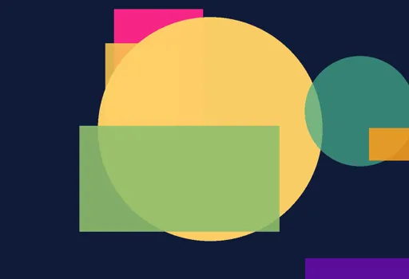
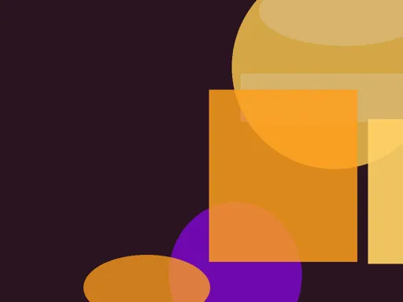
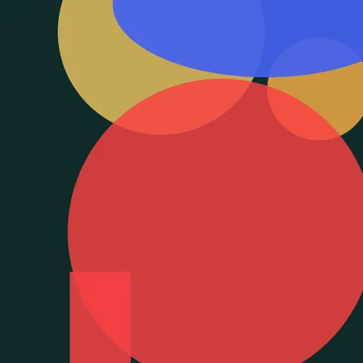
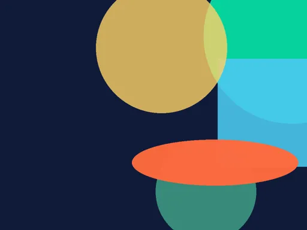
Flux · v1 · updated just now